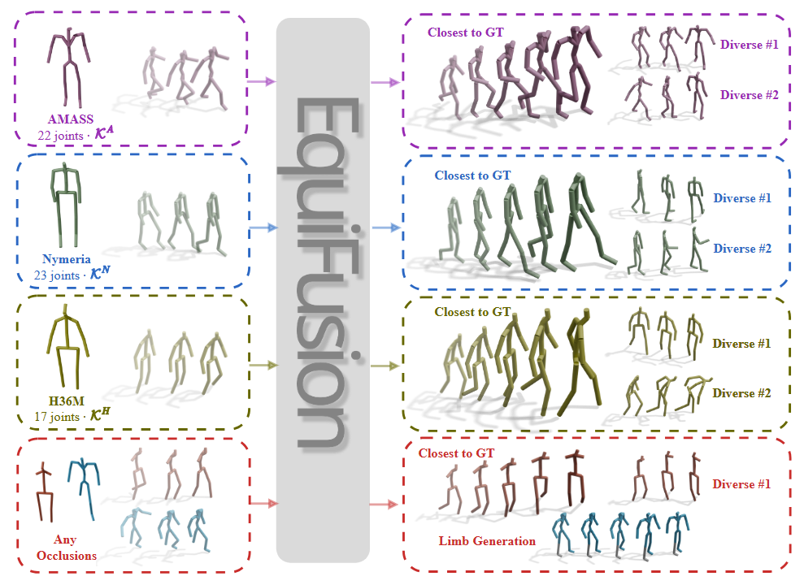
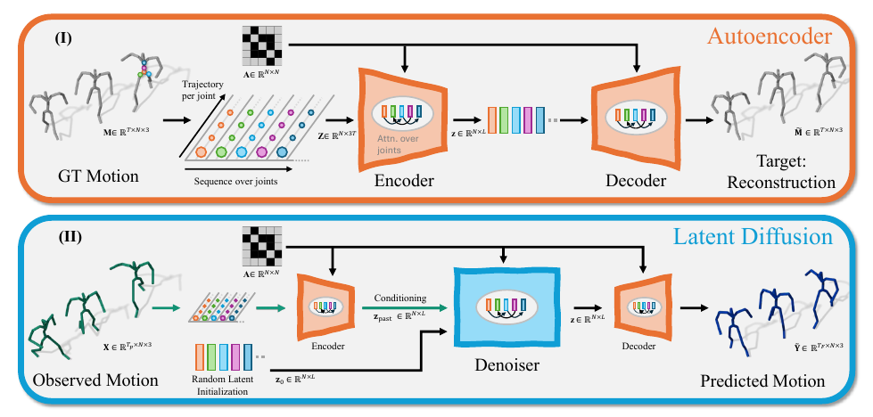
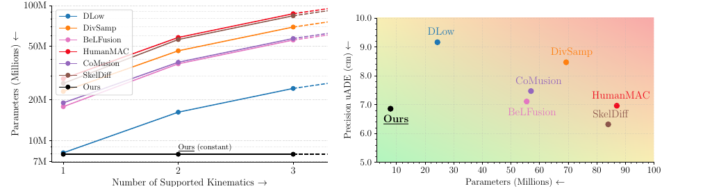

Human motion is captured by many different technologies — from studio motion-capture suits to wearable sensors like Meta's Aria glasses — and every dataset stores the body in its own skeleton format. EquiFusion is the first stochastic 3D human motion prediction model that works with any skeleton format, even ones it has never seen or with occluded and missing limbs — reaching state of the art with 75% fewer parameters.
observed past predicted future occluded / ground truth — all four sequences come from one single trained model.

Existing Stochastic 3D Human Motion Prediction models are fundamentally constrained by hard-coding the skeleton kinematics, severely limiting generalization, preventing cross-dataset training, and requiring complex data retargeting. We introduce EquiFusion, the first kinematics-agnostic model to solve this bottleneck, implementing a latent diffusion model with a permutation equivariant architecture. EquiFusion treats the kinematics' connectivity as an explicit input parameter, ensuring its internal computations are inherently agnostic to joint ordering and graph structure. This novel design enables truly cross-dataset generalization to unseen kinematics and unlocks novel zero-shot directions, such as motion prediction from partial or occluded observations and targeted limb generation. EquiFusion achieves state-of-the-art results on major benchmarks, being up to 75% more compact than previous kinematics-specific methods, while achieving faster training and inference. EquiFusion thus establishes a new, flexible standard for robust human motion prediction.
Every motion-capture convention defines its own skeleton kinematics: AMASS uses the SMPL body with 22 joints, H36M has 17 joints and no feet, and Nymeria, captured with ARIA glasses and XSens, uses 23 joints with a different spine and hip layout. New devices will keep producing new formats.
Previous stochastic motion prediction methods hard-code one kinematics into their network weights. The result: a separate trained model for every dataset, no cross-dataset training, and no way to handle occluded or partial skeletons. The usual workaround — retargeting the input motion to the training skeleton — introduces conversion errors of up to 2.27 cm and a distribution shift, which is far from negligible when state-of-the-art prediction precision is around 7 cm.
Breaking this barrier — one model that trains on many datasets at once and runs on any skeleton — is a step toward human spatial AI and foundation models for human motion.
Different joint counts, positions, and connections — previous methods need one network for each.
Can a single model predict motion for any skeleton — even one it has never seen?
Trained on AMASS and Nymeria — never on H36M's 17-joint skeleton. Baselines must first retarget the input to their training kinematics; EquiFusion runs natively on the new skeleton.
Watch the baselines' hips and limb proportions: the retargeting they require corrupts hip bones and adds jitter, while EquiFusion stays coherent with the observation.
Models trained on AMASS, tested on MoYoga: extreme yoga poses far outside the training distribution. MoYoga shares the AMASS kinematics, so no retargeting is needed for any method — a level playing field.
On these balance-critical poses the baselines produce impossible torso twists or break the body apart; EquiFusion keeps the balance and the body intact.
Full limbs are removed from the input observation (shown in gray) — a setting never seen during training. EquiFusion predicts a plausible future for the visible joints regardless of the missing part, and can even generate the missing limb on request. Baselines require hand-crafted completion heuristics and are shown where available.
Gray limbs are hidden from the model's input. The last tab combines both zero-shot settings at once: an unseen kinematics (H36M) and occluded legs.
To handle arbitrary kinematic chains, a model's learned weights must be independent of the number of joints and of their ordering. We identify permutation equivariance as the key property: reordering the joints of the input motion \(\mathbf{X}\) and of its adjacency matrix \(\mathbf{A}\) must simply reorder the output,
EquiFusion is built end-to-end from operations that satisfy this property: a transformer autoencoder maps motion sequences to a joint-wise latent space, and a denoiser predicts future motion in this latent space, conditioned on the embedding of the observed past. The skeleton's connectivity is an explicit input to every stage — not a prior baked into the weights.

Graph convolutions aggregate features through the normalized adjacency \(\mathbf{W} = \mathbf{D}^{-1}\mathbf{A}\), and attention runs over joint tokens without positional encodings. Every layer commutes with joint permutations, so the full network does too — with a formal guarantee, not data augmentation.
Each joint is encoded as the direction from its parent joint. Limb lengths stay consistent by design — zero stretching and jitter — and this parametrization transfers across kinematics and improves existing SHMP methods too, without architecture changes.
The adjacency matrix is a runtime input, not a design constant. One trained instance serves AMASS, H36M, Nymeria, partial skeletons — or any kinematics released in the future — with a parameter count that stays constant no matter how many joints or datasets.
EquiFusion achieves state-of-the-art results with 75% fewer parameters than the closest competitor on standard benchmarks (AMASS, H36M, Nymeria) — with a single model instance across all datasets.
fewer parameters than the closest competitor — constant at ∼7M while baselines grow toward 100M
faster training and inference, despite training on multiple datasets at once
improvement across all metrics in zero-shot kinematics settings, gaining up to 70% on realism
limb stretching and jitter — guaranteed by the bone-direction parametrization
